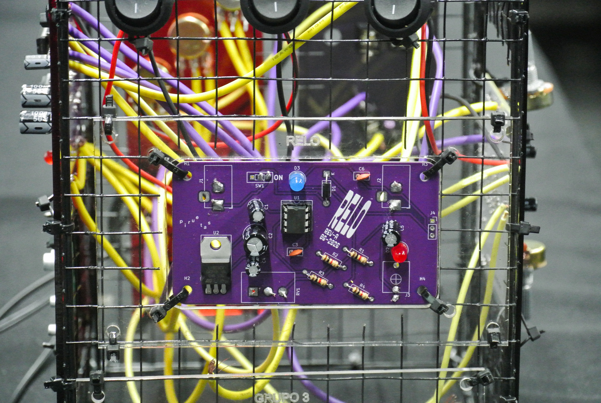
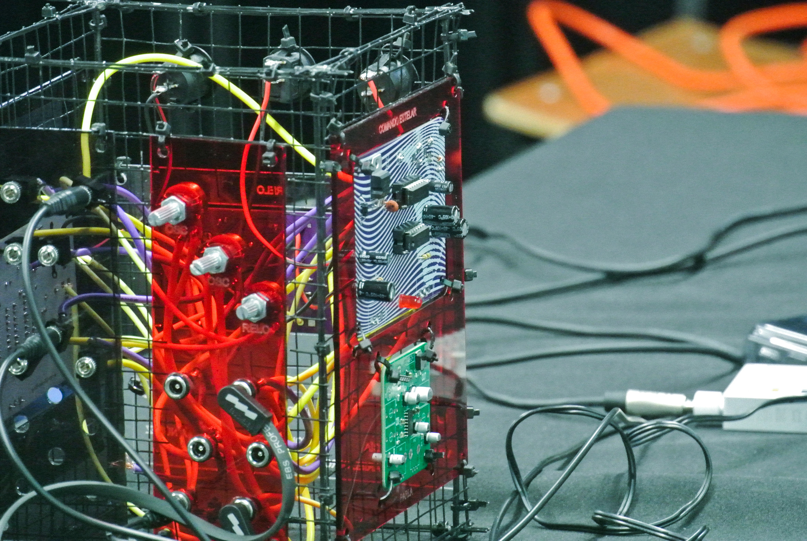
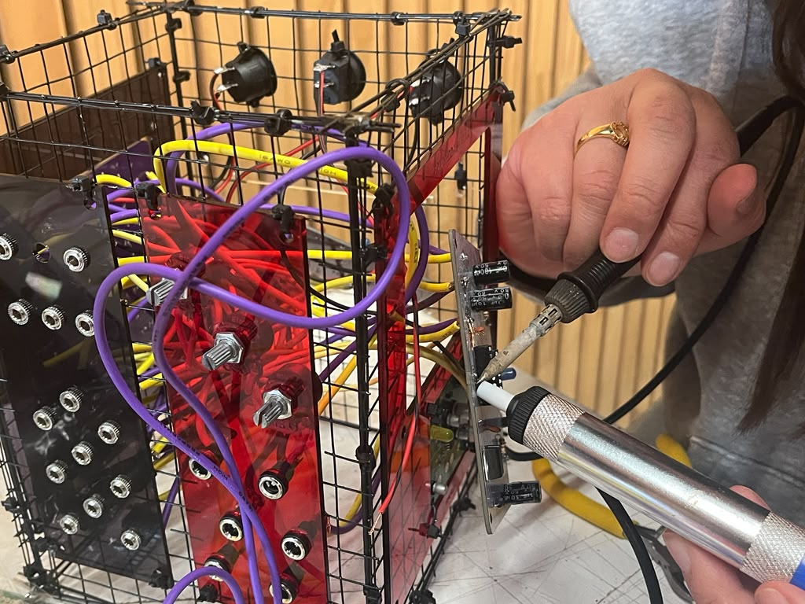

02 / 08
Vitrina Sónica
Vitrina Sónica es un sintetizador modular compuesto por dos módulos osciladores y un mixer, desarrollado en colaboración con Narely Riquelme, Vanessa García y Carla Núñez. El proyecto busca explorar la mezcla y superposición de señales sonoras para generar distintas texturas de sonido.
La pieza se distingue por su enfoque estético: en lugar de ocultar su electrónica, la expone deliberadamente. Su carcasa combina malla de acero, acrílico de color y placas PCB visibles, dejando a la vista las conexiones, los cables y los módulos que la conforman. Esta transparencia estructural convierte el funcionamiento interno del instrumento en parte central de su lenguaje visual, permitiendo observar cómo circulan las señales entre las distintas placas.
El nombre Vitrina Sónica responde justamente a esta condición: el objeto se presenta como una vitrina donde la electrónica es protagonista, estableciendo un diálogo directo entre sonido, circuito y materialidad.


